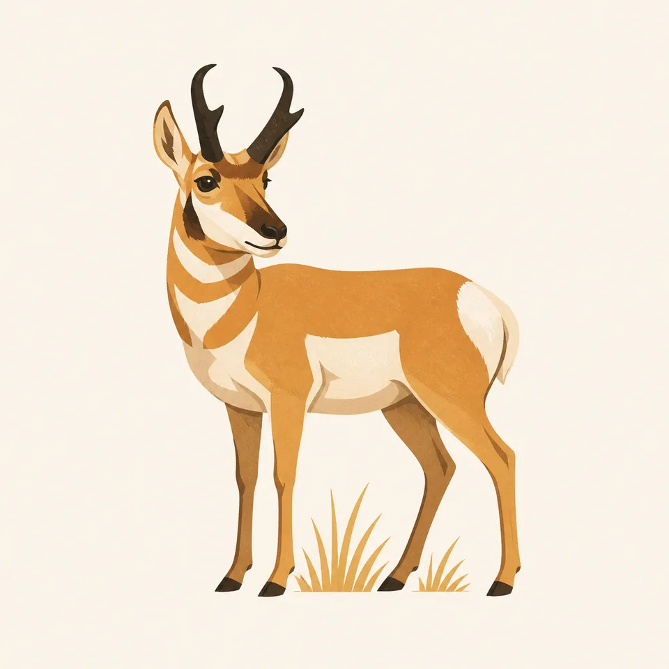
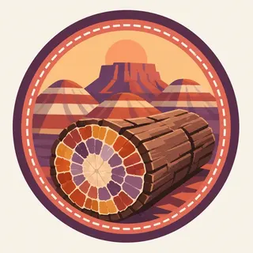

01
The logs in place
Concentrations sit at Rainbow Forest, Crystal Forest, and Jasper Forest. Black Forest is the largest. The pieces in the visitor-center courtyard were moved for viewing. The hillsides were not.
TrailMark Archive Edition
Arizona | Painted Desert
Colorful stone logs lie in shortgrass prairie, inside a badland the park says is entirely within the Painted Desert.
Archive No. TM-PEFO-017
National Park since 1962
Collection Painted Desert
Park Overview
Petrified Forest was in the second group of national monuments, proclaimed in 1906 with Montezuma Castle and El Morro. Congress redesignated it a national park in 1962.
NPS is plain about the difference. A monument, under the Antiquities Act, can be set aside by proclamation. A national park takes an act of Congress and usually protects more than one resource. Here those resources include petrified wood, archeological and paleontological sites, historic places, and native grassland.
The park is currently over 200,000 acres. A 2004 law authorized expansion up to 218,533 acres as adjacent private land becomes available. The wood was not hauled in. It is why the park exists.
Emotional Thesis
A cross-section of petrified wood looks painted because minerals replaced the wood. The badlands behind it are painted for a different reason: iron, manganese, and the oxygen present when the sediment settled.
TrailMark wants both in the same memory. A close-up of a log without the prairie is a specimen. The park is the specimen still lying where the Triassic left it.
Landscape Highlights
01
Concentrations sit at Rainbow Forest, Crystal Forest, and Jasper Forest. Black Forest is the largest. The pieces in the visitor-center courtyard were moved for viewing. The hillsides were not.
02
The whole park lies inside the Painted Desert. NPS describes red mainly at the north end, blue in the middle, and gray with maroon and purple bands at the south.
03
Most of the park is short-grass prairie, not a barren floor. Golden buckwheat, saltbush, rabbitbrush, and a long list of grasses are the living cover between the logs.
Wildlife
The largest animals NPS names are pronghorn, elk, mule deer, coyotes, bobcats, and golden eagles. Pronghorn are not antelope. The park notes their closest living relative is a giraffe.

01
Many species are nocturnal, and the park is closed at night, so a midday drive undercounts the place.
02
The extra drawing is a pronghorn. That animal is on the park's own list. The grass in the drawing is the point: this is prairie with stone trees in it.
03
Flowers are not souvenirs. NPS states that picking them is against the law because they seed the next year and feed animals.
Geology
The rounded hills are badlands. Volcanic ash from about 200 million years ago, blown from what is now California, southern Nevada, and western Arizona, supplied silica that weathers into bentonite.
01
Bentonite can swell to about eight times its dry mass, then crack as it dries. That movement discourages plants, which is why the hills stay bare.
02
Summer monsoon rain can remove as much as a quarter inch of rock a year from the steep slopes. The color is mineral: iron for the reds, low oxygen for greens and purples, manganese for some of the grays.
03
The wood petrified over roughly 20 million years of ordinary tree death, not in a single blast like Mount St. Helens. The volcanoes were hundreds of miles off.
Snow happens. Most of Arizona, outside the Navajo Nation, stays on Mountain Standard Time all year. The park FAQ warns travelers to reset their watches.
Wind is strongest at the change of seasons. Rainfall for the year averages about 10 inches, and the region has been in a long drought.
Monsoon, officially June 15 to September 30, is a season of storms, not one storm. It is when the badlands lose the most sediment.
The drive through the park is 28 miles. Without stops it takes about an hour. Autumn light on the clay is a reason to use the pullouts instead.
Photography
Rainbow Forest was built where the wood is thick. The photograph still needs the badland, or it becomes a tabletop.
01
Every piece in a roadside shop came from outside the boundary. Inside the park, wood, pottery, and even Route 66 debris stay put.
02
The north end reads red. The south end reads gray, maroon, and purple. One frame of each is the essay.
03
Include grass or a person-free trail edge so the log is obviously a trunk, not a pebble.
Field Notes
The wood looks too deliberate to have grown, which is why people try to carry a piece of it away.
TrailMark Field Notes

Badge Story
The badge should show mineral color in a trunk: quartz colors, not bark and leaves. A green tree would be the wrong park.
Cross-section rings in rust, cream, and violet.
A band of Painted Desert color somewhere in the ground.
Distinct from canyon red rock and from a saguaro column.
Archive No.017
LocationPainted Desert
ReleaseStone Log
Stewardship / Safety
With more than half a million visitors a year, NPS says the wood could be picked clean in a few years if collecting were allowed. Conditions and hours change. Check the Park Service.
Leave petrified wood, other rocks, plants, pottery, and arrowheads where they are.
Badland slopes are bare because the clay swells and sheds. Walking off the designated routes crumbles them faster.
The park closes. After hours, rangers clear the road. Do not plan a night walk here.
Petroglyphs are pecked into a thin varnish. Oil from hands is part of how they disappear.
Current conditions, fees, and alerts are on the National Park Service site.
Continue the Archive
The Grand Canyon is the big cut to the west, already open. Great Sand Dunes is a different kind of pile, quartz against the Sangre de Cristo.